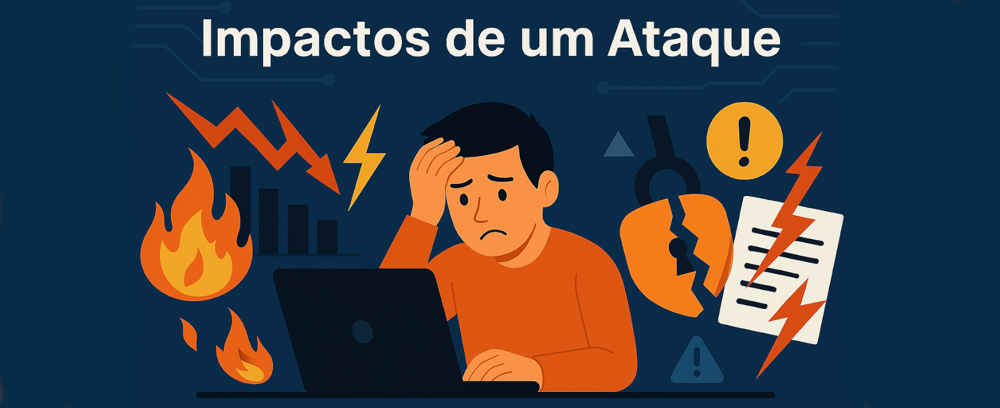

Engenharia Social

Objetivo
Engenharia Social é uma técnica usada por cibercriminosos para manipular pessoas a fim de obter informações confidenciais, acesso a sistemas ou induzir ações prejudiciais. O objetivo é explorar o fator humano como ponto fraco na segurança da informação.
Visão Geral
A Engenharia Social explora falhas comportamentais e psicológicas das pessoas, como confiança, medo ou curiosidade. Ataques podem acontecer via e-mail, redes sociais, telefonemas ou presencialmente. São estratégias que não dependem de falhas técnicas, mas sim de erros humanos.
Técnicas Comuns
Phishing: Envio de e-mails falsos que parecem legítimos, tentando enganar a vítima para clicar em links maliciosos ou fornecer dados pessoais.Spear Phishing: Variante mais direcionada do phishing, com informações personalizadas para aumentar a chance de sucesso.
Baiting: Atrair a vítima com algo atrativo, como pen drives “esquecidos” com malware.
Pretexting: Criação de um falso cenário para convencer a vítima a entregar informações confidenciais.
Vishing e Smishing: Uso de chamadas telefônicas (voice phishing) ou mensagens SMS para enganar as vítimas.
Como se Proteger
Educação e Treinamento: Capacitar usuários para identificar e reagir a tentativas de engenharia social.Verificação de Identidade: Confirmar a identidade de quem solicita dados confidenciais.
Políticas de Segurança: Implementar diretrizes claras sobre compartilhamento de informações.
Dupla Verificação: Confirmar ações importantes por mais de um canal (ex: telefone + e-mail).
Atualizações e Patches: Manter sistemas atualizados evita que um ataque social resulte em exploração técnica.

Fraudes Financeiras: A vítima pode ser manipulada a transferir dinheiro ou conceder acesso bancário.
Acesso Não Autorizado: Invasores podem obter credenciais e comprometer redes internas.
Danos à Imagem: Organizações podem perder a confiança do público e sofrer danos reputacionais.
Prejuízos Jurídicos: Caso envolva vazamento de dados, há implicações legais (ex: LGPD).
Impactos de um Ataque
Roubo de Informações: Dados sensíveis como senhas, cartões e documentos podem ser obtidos.Fraudes Financeiras: A vítima pode ser manipulada a transferir dinheiro ou conceder acesso bancário.
Acesso Não Autorizado: Invasores podem obter credenciais e comprometer redes internas.
Danos à Imagem: Organizações podem perder a confiança do público e sofrer danos reputacionais.
Prejuízos Jurídicos: Caso envolva vazamento de dados, há implicações legais (ex: LGPD).
Casos Reais
Twitter (2020): Hackers usaram engenharia social para acessar sistemas internos e divulgar mensagens de golpe via contas verificadas.Target (2013): Ataque começou com e-mails de phishing enviados para funcionários de fornecedores, levando a um dos maiores vazamentos da história.
Empresa de Energia (caso fictício): Funcionário recebeu ligação de um “técnico” pedindo acesso remoto, liberando sem verificar.

Conclusão
A Engenharia Social continua sendo uma das ameaças mais eficazes e perigosas na área da cibersegurança. Ela não depende de brechas técnicas, mas sim do comportamento humano.Por isso, investir em conscientização, treinamentos e políticas de segurança é fundamental para reduzir riscos e proteger dados e sistemas.
A vigilância contínua e a cultura de segurança devem fazer parte da rotina de todos dentro de uma organização.